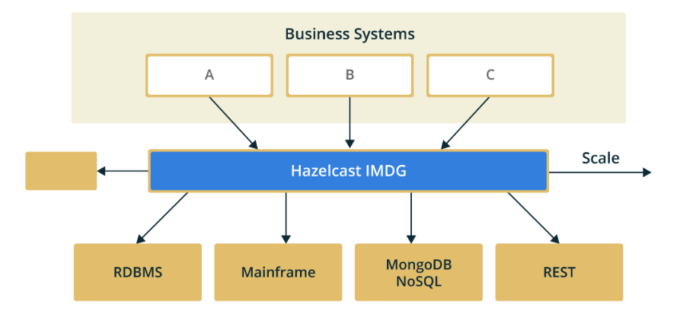
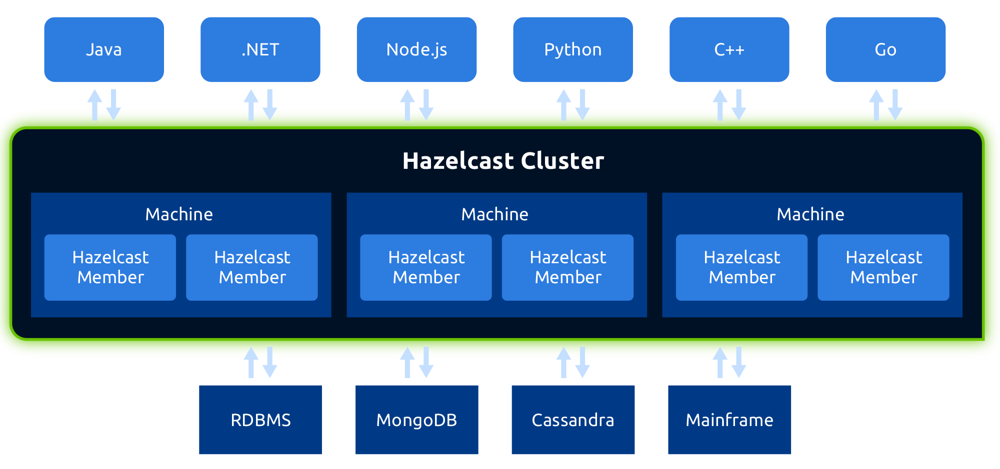
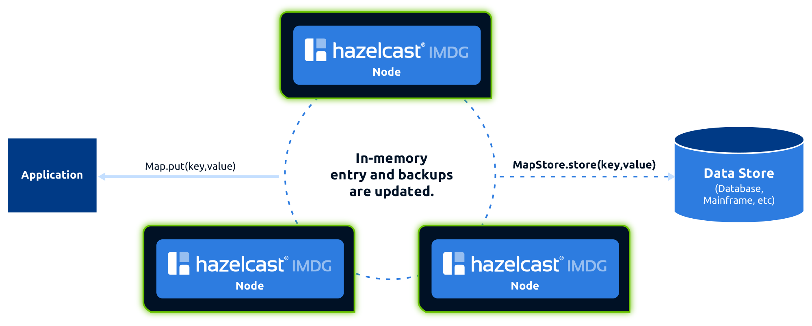
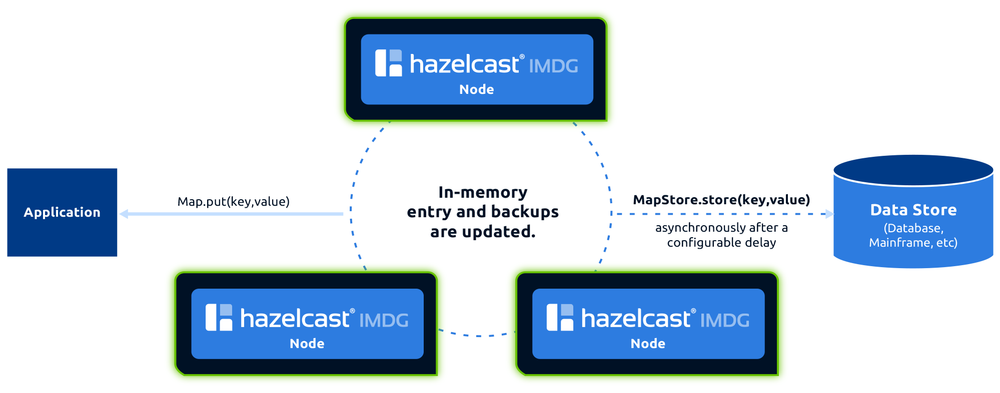
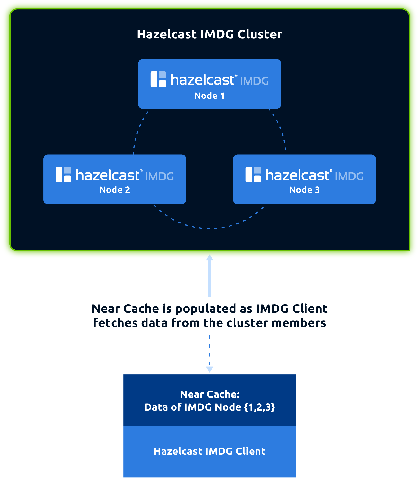
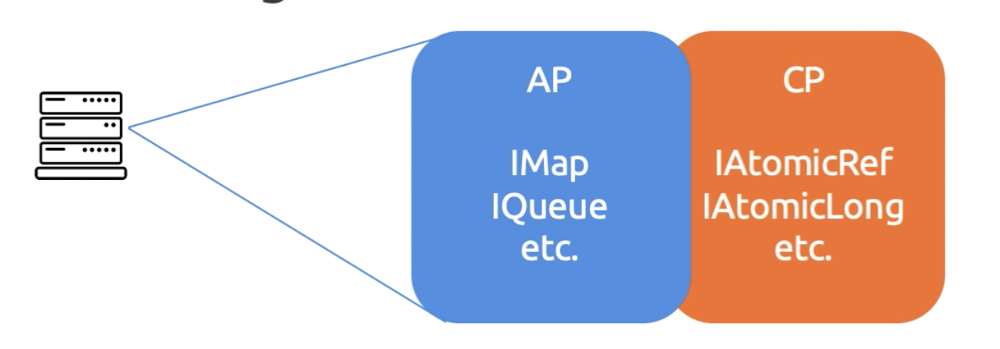
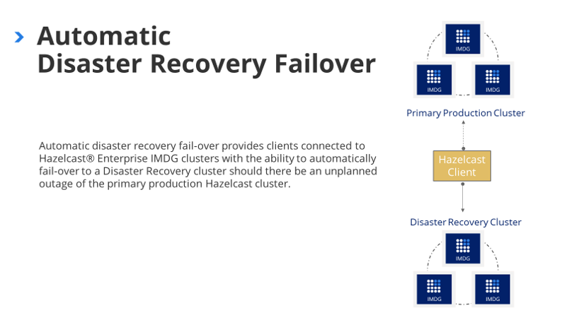
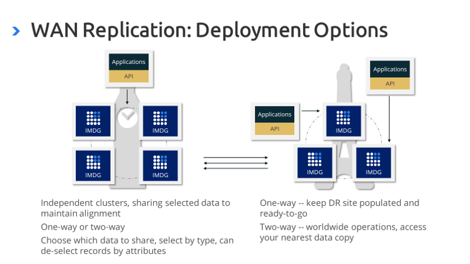
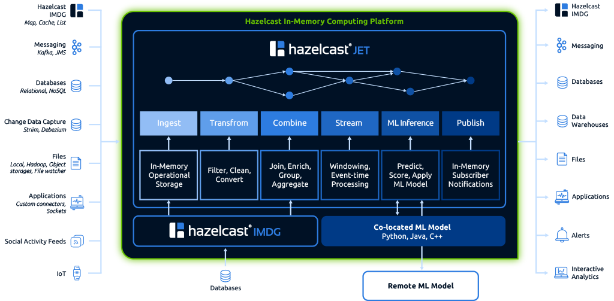

Hazelcast
The Hitchhiker's Guide
Grzegorz Piwowarek
@pivovarit
{ 4comprehension.com }
Senior Software Engineer @ Hazelcast
Trainer @ Bottega IT Minds
@pivovarit
Born in 2008 in Turkey as a simple caching solution...

source: Hazelcast
source: Hazelcast
The Hazelcast IMDG is an operational in-memory computing platform that manages data and distributes processing using memory and parallel execution for breakthrough application speed and scale.

source: Hazelcast
source: Hazelcast

source: Hazelcast
source: Hazelcast
source: Hazelcast
IMDG
In-Memory Data Grid
Cache Access Patterns
Read-through

source: Hazelcast
Write-through
source: Hazelcast
Write-behind
source: Hazelcast
Near Cache
source: Hazelcast
com.hazelcast
hazelcast
4.1
Shaded
Embedded
HazelcastInstance hazelcastInstance = Hazelcast.newHazelcastInstance();
Client-Server
HazelcastInstance hazelcastInstance = HazelcastClient.newHazelcastClient();
Clients
Binary Client Protocol
Java
Scala
C++
C#/.NET
Python
Node.js
Go
Rust (work-in-progress)
// import com.hazelcast.map.IMap;
HazelcastInstance hazelcastInstance = Hazelcast.newHazelcastInstance();
IMap<String, Integer> simpleMap = hazelcastInstance.getMap("simpleMap");
simpleMap.put("foo", 42);
simpleMap.get("foo"); // 42
// import java.util.Map;
HazelcastInstance hazelcastInstance = Hazelcast.newHazelcastInstance();
Map<String, Integer> simpleMap = hazelcastInstance.getMap("simpleMap");
simpleMap.put("foo", 42);
simpleMap.get("foo"); // 42

source: Hazelcast
Map is just the beginning
Data Structures is just the beginning
EntryProcessor
Instead of fetching the data, processing it and sending it back, let a cluster process it. A processed entry remains locked during processing
@BinaryInterface
@FunctionalInterface
public interface EntryProcessor<K, V, R> extends Serializable {
R process(Entry<K, V> entry);
}
ExecutorService
public interface IExecutorService
extends ExecutorService, DistributedObject {
void execute(Runnable command, MemberSelector memberSelector);
void executeOnAllMembers(Runnable command);
// ...
}
Aggregation
IMap<String, Employee> employees = hz.getMap("employees");
double avgSalary = employees.aggregate(
new Aggregator<Map.Entry<String, Employee>, Double>() {
protected long sum;
protected long count;
@Override
public void accumulate(Map.Entry<String, Employee> entry) {
count++;
sum += entry.getValue().getSalaryPerMonth();
}
// ...
});
Queries
IMap<String, Employee> map = hazelcastInstance.getMap("employee");
Set<Employee> employees = map.values(new SqlPredicate("active AND age < 30"));
CAP Theorem
Consistency
Availability
Partition Tolerance
Pick two.source: Hazelcast
CP Subsystem
source: Hazelcast
Advanced Data Structures
RingBuffer
A fixed-capacity data structure that overwrites oldest elements when capacity is exceededHyperLogLog
A probabilistic data structure used to estimate the cardinality(number of unique elements) of a data set.The HyperLogLog algorithm can estimate cardinalities well beyond 10^9 with a relative accuracy (standard error) of 2% while only using 1.5kb of memory. Fangjin Yang Fast, Cheap, and 98% Right: Cardinality Estimation for Big Data
Flake Id Generator
Cluster-wide ordered and unique identifiers IDs without any coordination between memberssafe even in split-brain scenario
CRDT PN Counter
A conflict-free alternative to AtomicLongOther Integrations
Hibernate 2LC
Hazelcast provides a distributed second level cache for your Hibernate entities, collections and queries.http://github.com/hazelcast/hazelcast-hibernate5/
Spring Data
Spring Data Hazelcast Integrationhttps://github.com/hazelcast/spring-data-hazelcast
Quarkus Hazelcast Client
https://github.com/hazelcast/quarkus-hazelcast-client
Tomcat Session Manager
Each HttpSession object is kept in the Hazelcast Maphttps://github.com/hazelcast/hazelcast-tomcat-sessionmanager
Apache Shiro
Apache Shiro is a security framework that performs authentication, authorization, cryptography, and session management. Shiro uses Hazelcast for caching and session clustering.Envoy Proxy
Envoy is an open source edge and service proxy, designed for cloud-native applications.https://github.com/envoyproxy/envoy/pull/10536
Cloud Integrations
Zone-awareness + autodiscovery
Hazelcast Cloud
Hazelcast IMDG cluster as a service
https://cloud.hazelcast.com
Enterprise Features
Disaster Recovery
source: Hazelcast
WAN Replication
source: Hazelcast
HD Memory(off-heap store)
Hot Restart Store
Future
Hazelcast Jet

private static Pipeline buildPipeline() {
Pipeline p = Pipeline.create();
p.readFrom(TestSources.itemStream(100, (ts, seq) -> nextRandomNumber()))
.withIngestionTimestamps()
.window(WindowDefinition.tumbling(1000))
.aggregate(AggregateOperations.topN(TOP, ComparatorEx.comparingLong(l -> l)))
.map(WindowResult::result)
.writeTo(Sinks.observable(RESULTS));
return p;
}